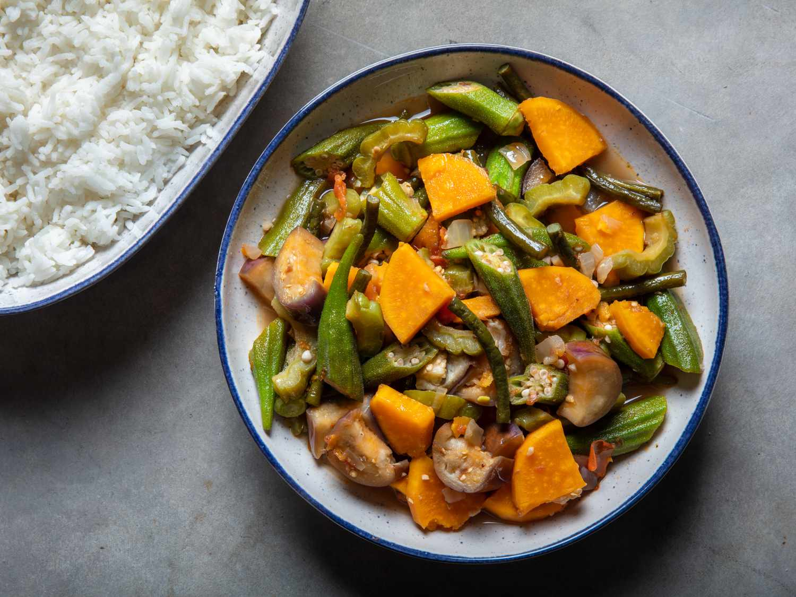

Succulent chicken pieces marinated in soy sauce, vinegar,
and garlic, then simmered to perfection.
Price: ₱550
2. Beef Bulalo
A hearty Filipino soup featuring beef shanks and bone marrow
cooked with vegetables in a rich broth.
Price: ₱800
3. Lechon Kawali
Crispy deep-fried pork belly, a beloved Filipino dish known
for its crunchy skin and tender meat.
Price: ₱600
4. Pork Sinigang
A tangy soup made with pork, tamarind, and assorted vegetables,
offering a delightful blend of sour and savory flavors.
Price: 370
5. Beef Steak(Bistek)
Thinly sliced beef marinated in soy sauce and calamansi juice,
pan-fried with onions for a flavorful dish.
Price: ₱500

6. Pinakbet
A savory Filipino vegetable stew featuring mixed vegetables
ooked with shrimp paste, showcasing
the vibrant flavors of the Philippines.
Price: ₱299
7. Pancit-Bihon
Stir-fried rice noodles with vegetables and meat, seasoned with soy sauce,
creating a tasty and satisfying noodle dish.
Price: ₱650
Vegetables Dishes
1. Monggo Guisado
Savor the comforting embrace of our Monggo Guisado,
marrying tender mung beans,vibrant veggies,
and succulent shrimp in a rich, savory symphony.
Price: ₱259
2. Bok Choy in Garlic sauce
Delight in the crisp perfection of Bok Choy,
in Garlic Sauce where verdant greens
meet fragrant garlic in a tantalizing fusion.
Price: ₱150
3. Laing
Ignite your senses with Laing, a fiery blend of dried
taro leaves, creamy coconut milk, and spicy chili peppers,
enriched with the essence of shrimp paste.
Price: ₱159
4. Lumpiang Sariwa
Embark on a culinary adventure with Lumpiang Sariwa,
where fresh veggies, plump shrimp, and savory pork
unite in a delicate rice paper wrap, drizzled with
sweet peanut sauce.
Price: ₱199
5. Chop Suey
Revel in the harmony of Chop Suey, a colorful stir-fry
of crisp veggies, tender meat, and savory sauce,
ligniting a symphony of flavors.
Price: ₱450
6. Ginataang Kalabasa
ndulge in the creamy decadence of Ginataang Kalabasa,
where velvety squash bathes in coconut milk,
adorned with succulent shrimp and aromatic spices.
Price: ₱299
7. Pinakbet
A savory Filipino vegetable stew featuring mixed vegetables
ooked with shrimp paste, showcasing
the vibrant flavors of the Philippines.
Price: ₱299
Appetizers Dishes
1. Empanada
Delight in the crispy embrace of our Empanada, where golden
pastry envelopes a savory filling of seasoned meats
and vegetables, promising a burst of flavor in every bite.
Price: ₱50
2. Chicharong Bulaklak
indulge in the crispy decadence of Chicharong Bulaklak,
where delicate flower-like chicharon blossoms
are fried to golden perfections
Price: ₱150
3. Sisig
Experience the sizzle and spice of Sisig, a sizzling sensation of
finely chopped pork, tangy calamansi, and fiery chili peppers,
igniting your taste buds with each savory bite.
Price: ₱250
4. Lumpiang Shanghai
Dive into the irresistible crunch of Lumpiang Shanghai, where delicate
wrappers hug a flavorful mixture of ground pork and spices, creating
a symphony of textures and tastes that leave you craving for more.
Price: ₱150
5. Pork Siomai
Indulge in the delicate perfection of Pork Siomai, where tender pork
dumplings are steamed to succulent perfection, bursting
lwith savory flavors and served with a tangy dipping
Price: ₱100
6. Kinilaw
Awaken your senses with Kinilaw, a refreshing dish of marinated raw
fish or seafood, kissed with the bright flavors of vinegar, citrus,
and spices, offering a tantalizing balance of tartness and freshness.
Price: ₱200
7. Tokwa't Baboy
Delight in the harmony of flavors in Tokwa't Baboy, where crispy fried tofu
and tender pork are bathed in a tangy soy-vinegar dressing, creating a
delightful contrast of textures and tastes that excite the palate.
Price: ₱250
Drinks
1. Buko Juice
Refreshing tropical drink made from young coconut water, known
for its natural sweetness and hydrating properties.
Price: ₱99
2. Melon Juice
Cool and revitalizing beverage crafted from fresh melon, offering a
delightful balance of sweetness and subtle fruity flavors.
Price: ₱99
3. Pineapple Juice
Tropical thirst-quencher derived from ripe pineapples, delivering a
tangy and refreshing taste with a hint of tropical aroma.
Price: ₱99
4. Sago't Gulaman
Filipino specialty drink featuring chewy tapioca pearls (sago) and
jelly cubes (gulaman) infused in a sweet and refreshing syrup,
often enjoyed as a delightful dessert beverage.
Price: ₱130
5. Buko Pandan
Creamy and aromatic Filipino dessert drink made from coconut
meat (buko) and pandan-flavored jelly, offering a unique blend of
tropical flavors and textures.
Price: ₱130
6. Salabat
Traditional Filipino ginger tea renowned for its soothing and
invigorating properties, crafted from ginger root simmered in water
and sweetened with honey or sugar.
Price: ₱99
7. Kapeng Barako
Strong and bold Filipino coffee brewed from liberica coffee
beans, prized for its robust flavor profile and aromatic
richness, often enjoyed as a wake-up beverage.